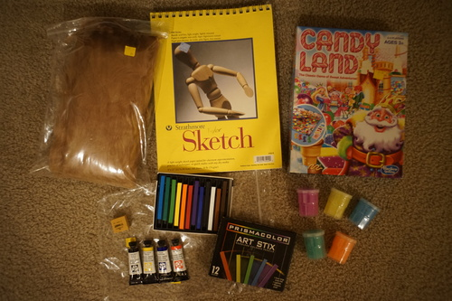

I received an absolutely blessed gift yesterday ;_______;

I was offered very kindly a pair of kinoko eye by hors. I guess that's the secret to getting my address... She sent me so many wonderful things! As soon as I saw the honeybear I started running around the house screaming! Ryan did not appreciate it as much as I did.

I'm so happy to finally have a honeybear!! The magnets in his feet are so fun. He can stand on Praline's hand because he attaches to the magnet in her hand! How many dolls do I have with head magnets... Isn't Praline so KJ in her new kinoko eye?! Kyaaaa!!! CUTE!!!

I restrung Praline the night before too. I wasn't able to source thick enough elastic so hors suggested I double it up. I never even considered it before but it worked! She stands a lot sturdier now. This tiny body is so hard to string. I used twist ties to pull the elastic through her microscopic channels.
Can I make wigs too???
Why did Taylor give up so soon??
For Ryan's office. What exactly does he do at work....
Contents: Gum eraser, 4 unopened tubes of Daniel Smith watercolors, Prismacolor Art Stix, 5 containers of slime. Uh score?!